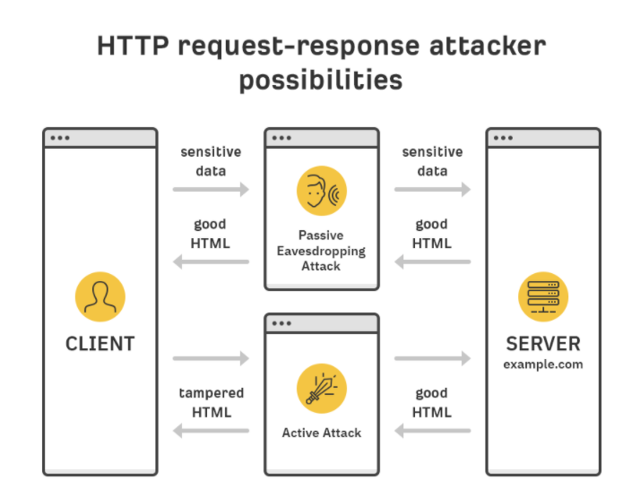

HTTP stands for Hypertext Transfer Protocol. When we enter http:// in the address bar in front of the domain, it tells the browser to connect over HTTP. HTTP uses TCP (Transmission Control Protocol) to send and receive data packets over the web. It is basically a protocol that's used by a client and server which allows you to communicate with other websites. The client sends a request message to an HTTP server (after the TCP handshake) which hosts a website, the server then replies with the response message. The response message contains completion status information.
If there is a problem with an HTTP request there is a list of status codes which inform your browser so that you can better troubleshoot what the problem might be. The way the user-agent handles the response depends upon the code and the response header fields. Below is the list of some of the status codes
In most of the cases a malformed HTTP request (e.g. empty requests by load balancers / health checks). A certain number is normal. Learn more about how to avoid a bad request.
It is prohibited to access the requested asset. A possible reasons is a wrong URL or the Secure Token is not valid. Learn more about 403 Forbidden errors.
The content either does not exist or has been moved. Learn more about 404 Not Found errors.
The method is not allowed. A Push Zone only supports the GET and HEAD methods. Learn more about 405 Method Not Allowed errors.
The Secure Token has expired.
A bad bot which is blocked hits a KeyCDN edge server.
Our edge server was not able to pull the content from your origin server. Either your origin server is not reachable or firewall rules prevented the connection. The status code 500 is a generic error message, which is thrown if there is a 502 Bad Gateway or a 504 Gateway Timeout.
HTTPS stands for Hypertext Transfer Protocol Secure (also referred to as HTTP over TLS or HTTP over SSL). When we enter https:// in the address bar in front of the domain, it tells the browser to connect over HTTPS. Generally sites running over HTTPS will have a redirect in place so even if user type in http:// it will redirect to deliver over a secured connection. HTTPS also uses TCP (Transmission Control Protocol) to send and receive data packets, but it does so over another port, within a connection encrypted by Transport Layer Security (TLS).
HTTPS transmits its data security using an encrypted connection. Basically it uses a public key which is then decrypted on the recipient side. The public key is deployed on the server, and included in an SSL certificate. The certificates are cryptographically signed by a Certificate Authority (CA), and each browser has a list of CAs it implicitly trusts. Any certificate signed by a CA in the trusted list is given a green padlock lock in the browser's address bar, because it's proven to be "trusted" and belongs to that domain.
Hypertext Transfer Protocol (HTTP) is a fundamental protocol that is used by the World Wide Web for viewing website content on the internet. HTTP allows us to browse the internet and navigate to our favourite websites.
HTTP was not initially created with security in mind, and this meant that any information communicated between your computer and the website was transmitted in plain text. Therefore, HTTPS, the S standing for secure, began to be incorporated across websites to improve overall security. With this in place, information entered on any web forms is encrypted in transit to ensure that it cannot be read by malicious actors.
Let's understand the communication between the client (browser) and server when there’s an attacker in between.
As you can see, attackers can get hold of sensitive data like login and payment details or inject malicious code into the requested resources.
Potential network attacks can happen anywhere with an untrusted router or ISP. Any public WiFi network is therefore vulnerable to such attacks.
That’s where the adoption of HTTPS comes into play. HTTPS encrypts HTTP requests and responses so an intercepting attacker would only see random characters instead of credit card details(just an example).
An analogy to how HTTPS works would be sending valuables in an indestructible locked combination box. Only the sending and receiving parties know the combination and if attackers get hold of it, they won’t get inside.
Mainly, HTTPS relies on TLS (Transfer Layer Security) encryption to secure the connections.The only way to enable HTTPS on your website is to get a TLS certificate and install it on your server.
TLS certificates are issued by Certificate Authorities (CA). The role of CA is to be a trusted third-party in the client-server relationship. Basically, anyone can issue TLS certificates but only the publicly trusted CAs are supported by browsers.
You can check every website’s TLS certificate and its issuing CA by clicking on the lock icon in your browser’s address bar. You can click through the certificate to learn more. The important thing here is the “Issued to:”. This is when we get into different types of validation standards for TLS certificates, which is what mainly sets the free and paid certificates apart.
I would encourage you to think about switching over to Https for a website containing sensitive information, as HTTPs is secured and operates at transport layer. In HTTPS it is required to have an SSL certificate and it is signed by a CA. Also it requires a domain validation. The data is encrypted in Https to prevent from malicious attacks. If you do not need to enter any information onto a website and is only used to show products and services, then they can opt for HTTP over HTTPS for improved performance